The Best in Dental Implant Care
Dental implants are changing the way people live! With them, people are rediscovering to eat, speak, laugh, and enjoy life. Get more information about implants and see if they are right for you.
View an interactive presentation about dental implants. 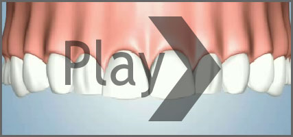
Dental implants are designed to provide a foundation for replacement teeth that look, feel, and function like natural teeth. The person who has lost teeth regains the ability to eat virtually anything and can smile with confidence, knowing that teeth appear natural and that facial contours will be preserved. The implants themselves are tiny titanium posts that are placed into the jawbone where teeth are missing. The bone bonds with the titanium, creating a strong foundation for artificial teeth. In addition, implants can help preserve facial structure, preventing the bone deterioration that occurs when teeth are missing.
Dental implants are changing the way people live! With them, people are rediscovering the comfort and confidence to eat, speak, laugh, and enjoy life.
Dr. Cook has received extensive training in Implantology. Through continuing education, Dr. Cook is abreast of the most current information on implant dentistry.
Evaluation
If, like many others, you feel implant dentistry is the choice for you, we ask that you undergo a dental/radiographic examination and health history. During these consultation visits, your doctor will address your specific needs and considerations. Your questions and concerns are important to us and our team will work with you very closely to help make your procedure a success.
We will also discuss fees and insurance at this time. There are many types of insurance plans, and coverage for implants is varied. We will be happy to assist you in obtaining any benefits to which you may be entitled.
Procedures
Dental implants are metal anchors that act as tooth root substitutes. They are surgically placed into the jawbone. Small posts are attached to the implant to provide stable anchors in the gums for replacement teeth.
For most patients, the placement of dental implants involves two surgical procedures. First, implants are placed within your jawbone. Healing time following surgery varies from person to person and is based on a variety of factors that include hardness of bone. In some cases, implants may be restored immediately after they are placed.
For the first three to six months following surgery, the implants are beneath the surface of the gums gradually bonding with the jawbone. You should be able to wear temporary dentures and eat a soft diet during this time. At the same time, your restorative dentist designs the final bridgework or denture that will ultimately improve both function and aesthetics.
After the implant has bonded to the jawbone, the second phase begins. Dr. Cook will uncover the implants and attach a small healing collar. After two weeks your general dentist will be able to start making your new teeth. An impression must be taken. Then posts or attachments can be connected to the implants. The teeth replacements are then made over the posts or attachments. The entire procedure usually takes six to eight months. Most patients do not experience any disruption in their daily life.
Dental Implants
Smile with Confidence!
Breathe Easy, Smile Wide
 |
Feeling self-conscious about your missing teeth or wobbly dentures? Bring back your natural smile and your self confidence with functional and aesthetic dental implants. An ideal alternative to bridges, a dental implant can actually replace teeth without compromising the quality of bordering teeth. Since they attach directly to the jawbone, an implant looks and feels like real teeth, and they prevent bone loss and gum recession at the same time. Don't let missing teeth affect how you chew, smile or live your life. Bring back that ear-to-ear grin with an effective, permanent dental implant. Call 910-256-8486 today to Ask Dr. Phyllis Cook if implants are right for you. |
|
Dissatisfied with your choice for dentures? Implant Benefits: A Reliable Alternative
|
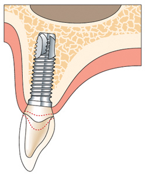 |
What is a Dental Implant?
A Dental implant is an artificial tooth root, or titanium fitting, that is surgically secured to the jawbone. The light and durable metal implant acts as an anchor for a false tooth or set of false teeth. Since the implant fuses to the bone, the attached artificial tooth, which is matched to the exact color of your natural teeth, looks and feels completely authentic. There are two general types of dental implants: endosteal and subperiosteal. An endosteal implant is the most common variety and anchor directly into the jaw bone, in either “root” or “plate” form, depending on the size of your jaw. Subperiosteal implants, which are available to patients who cannot wear conventional dentures or who have minimal bone height, are custom on-the-bone anchors that sit under the gums.
Is an Implant Right For Me?
| 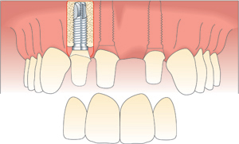 |
A secure, long-term smile solution, implants are ideal for people of all ages who have lost teeth due to injury, periodontal disease or other causes. A Dental implant can even replace a full set of missing teeth, certain types of bridges, and removable partial dentures. The best implant candidates are those with healthy gums, good general oral health, a strong commitment to oral hygiene, and enough bone near the missing teeth for the implants to attach securely to the jaw. Even if you aren't an ideal candidate, there are various procedures including bone grafting and sinus augmentation that can help prepare your mouth to accept implants. Call our office today to talk to see if Dental Implants are the right solution for you 800-92-SMILE begin_of_the_skype_highlighting 800-92-SMILE end_of_the_skype_highlighting. |
Single Tooth Replacement
Benefits of an all-ceramic crown implant:
|
When both the tooth and root are damaged, the best permanent replacement is a dental implant in conjunction with a ceramic crown. This solution both looks and functions just like a natural tooth. In this case, a so-called one-piece implant is used. This means that all components are installed as a single unit, resulting in immediately full functioning teeth, shorter treatment time and minimized pain.
| 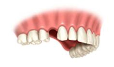 |
Treatment:
This procedure normally includes four
visits to the dentist. You should expect to be able to work the day
after having the implant installed.
Course Of Treatment
Intalling the New Tooth Step by Step
The course of treatment described here is one of several options available. Consult your dentist to find out what the best solution is for you, given your specific condition.
| 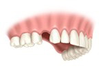 | 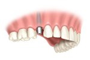 |
1: Before the procedure The dentist makes a first examination and takes one or more x-rays of the area to prepare for the procedure. | 2: Installing the implant The implant is installed. At this time, a temporary tooth is provided that allows you eat and function like normal almost immediately. The implant will need a few months to integrate with the jawbone before the next step is taken. |
| 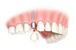 | 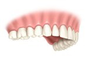 |
3: Attaching the new crown The final step is the placement of the permanent ceramic tooth. The new tooth is installed for life. No additional treatment is needed. | 4: End result You should expect the new tooth to fit and function just like a natural tooth. Do your usual dental hygiene to keep the tooth and gum around it clean. |
Alternatives To An All-Ceramic Crown On Implant
| 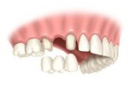 | Tooth-supported fixed bridge A traditional bridge involves grinding down adjacent teeth to support the bridge. It is a stable solution with good aesthetics and function that is fairly easy to install. However, this alternative has two main disadvantages: continuous bone resorbtion in the edentulous area, and sacrificing healthy teeth on behalf of the bridge. |
| 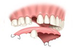 | Removable partial denture This is not a permanent alternative to a lost tooth. It is unstable and loosely attached, which affects both function and comfort. A removable partial denture is made of plastic – a material that can't create the same esthetic result as a ceramic crown. The benefits are few but do exist: adjacent teeth aren't affected. It is easily and quickly installed and relatively cheap. |
| 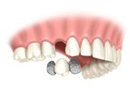 | Resin-bonded bridge This alternative has some clear advantages: it is quickly installed, functions well and, since it is made of ceramic, it gives a high esthetic result. Moreover, natural healthy teeth aren't affected. But it is not very permanent. The resin-bonded bridge will eventually come off – probably after just a couple of years – and will then have to be reinstalled. |
Multiple Tooth Replacement
|
Benefits with fixed bridge on implants: In this case, when replacing three teeth in the far back of the mouth, a fixed bridge anchored to dental implants is the only fixed alternative. Traditional dentures can't offer the same stability or function. Having dental implants replacing your lost back teeth will give you new, unparalleled strength and stability that allows you to eat what you want. It will also preserve your jawbone and facial appearance.
|
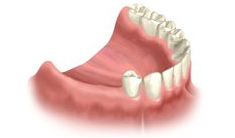 |
Treatment:
After the initial examination, you can expect 4-5 additional visits until the final fixed bridge is permanently attached. It is normal to experience some minor bruising and swelling in the gum and soft tissue afterwards. Any discomfort is usually treated with an ordinary painkiller. You should expect to be able to work the next day.
Course Of Treatment
FIXED BRIDGE – STEP-BY-STEP
The course of treatment described here is one of several options available. Consult your dentist to find out what the best solution is for you, given your specific condition.
| 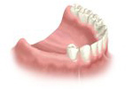 | 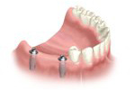 |
1: Before the procedure Three teeth at back end of the mouth are missing. The only real replacement alternative is installing a fixed bridge. The bridge contains all teeth in one piece and is anchored on dental implants. | 2: Installing the implant First, the implants are installed. This is normally done in a single session. A temporary bridge may be placed at the same time, making it possible for you to function like normal almost immediately after leaving the dentist. |
| 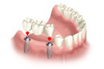 | 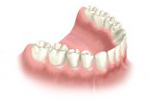 |
3: Attaching the bridge The implants need to integrate with the jawbone before the permanent bridge is attached. This is normally done 1-2 months after the implant installation. The time will vary, depending on the teeth affected and the aesthetical demands. | 4: End result The new bridge will handle all the pressure that your strong, natural back teeth did. You will have a stable and secure solution that allows you to eat what you want. |
Alternatives To Fixed Bridge
| 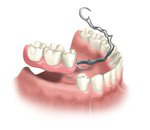 | Removable partial denture This alternative is often perceived as uncomfortable and a bit complicated to use. Function can’t be compared to that of a bridge. This denture is made of plastic and metal, which affects its look. It is quite expensive to fabricate due to its many parts. However, the installation process is simple, and natural teeth are spared. |
Full Arch Replacement
|
Benefits of a fixed bridge on implants When all teeth are missing or in such condition that they need to be replaced, a fixed bridge anchored to dental implants is the best permanent solution Before dental implants, there were no fixed solution available for people who lost all their teeth. Today, it is possible to replace a full jaw with dental implants and a fixed bridge that results in a permanent, stable and high esthetic solution.
|
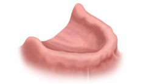 |
Treatment:
The treatment procedure and number of
visits is largely dependent on the specific conditions. But all in all,
8-10 visits should be enough to have a fixed bridge installed. Most
patients report that they were much more comfortable following the
procedure than they had anticipated.
Course Of Treatment
Fixed Bridge - Step by Step
The course of treatment described here is one of several options available. Consult your dentist to find out what the best solution is for you, given your specific condition.
| 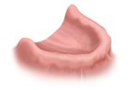 | 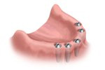 |
| 1: Before the procedure The dentist determines what needs to be done and prepares both himself and the patient for the coming treatment procedure. | 2: Installing the implants The first step is installing dental implants to replace the lost tooth roots. In this case, five implants are used. Temporary teeth are attached that enable you to eat and function like normal while waiting for the permanent bridge to be installed. |
| 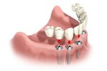 | 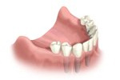 |
3: Attaching the bridge The final bridge is securely installed on top of the implants. With a full jaw replacement like this, it normally takes 2-3 visits to have the bridge completely attached. | 4: End result Your new teeth should be hard to tell from natural – both for you and others. People who have had traditional dentures before getting a fixed bridge often describe this as an overwhelming and very positive experience. |
Alternatives to a Fixed Bridge
| 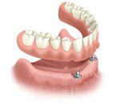 | An alternative to a fixed bridge is a removable overdenture, which is anchored on implants. The old fashioned denture has many disadvantages and should be avoided if possible. |
| 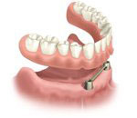 | Removable, implant anchored overdenture A removable full denture that is connected to either a ball or bar attachment, which in turn is anchored on two or more implants in the front part of the jaw. The implants help keep the denture in place and provide better function and comfort. Cost is usually the reason why this solution is chosen over a fixed bridge – although the end result can't be compared. |
| 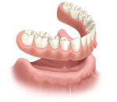 | Denture Full Removal A denture that is loosely placed on top of the gum to cover the lost
teeth. This alternative has no real advantages – except for its low
price and easy installation. |